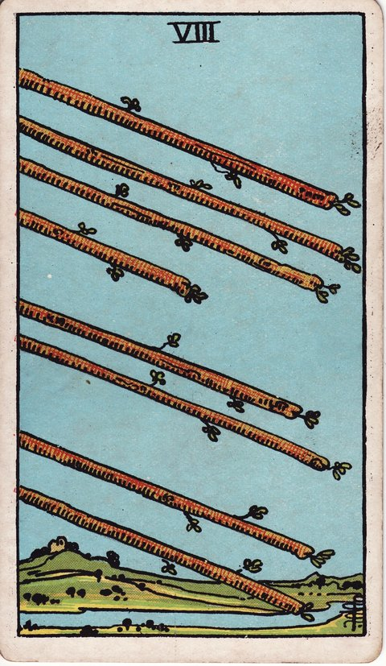

완드 · 타로 카드 백과사전
완드 8

정방향
키워드: 빠른 전개 · 좋은 소식 · 순조로운 흐름 · 화살 같은 진행 · 연이은 희소식 · 붙는 가속도
조언: 빠르게 흘러가는 지금의 흐름을 놓치지 말고 기회가 왔을 때 바로 잡으세요.
연애운
솔로
관계가 빠르게 진전되며 좋은 소식이 들려올 수 있는 시기입니다. 연락이 빠르게 오가는 상대가 있다면 적극적으로 반응해보세요.
커플
관계에 좋은 소식이 연달아 들려오는 시기입니다. 프러포즈나 여행처럼 빠르게 진행되는 이벤트가 좋은 결과를 낳을 수 있어요.
재물운
소비
생각보다 빠르게 지출 계획이 진행되는 시기입니다. 흐름에 맞춰 필요한 것을 놓치지 않고 챙기세요.
투자
자금의 흐름이 빨라지며 좋은 소식이 들려오는 시기입니다. 기회가 왔을 때 빠르게 판단하는 결단력이 필요합니다.
취업운
구직
면접이나 채용 결과가 빠르게 진행되는 시기입니다. 연락이 오면 지체 없이 바로 응답하는 것이 좋습니다.
이직
일이 빠르게 진행되며 좋은 소식이 잇따르는 시기입니다. 여러 제안이 한꺼번에 몰려올 수 있으니 우선순위를 정해두세요.
직장운
팀워크
여러 부서가 얽힌 협업 프로젝트가 순조롭게 맞물려 돌아가는 시기입니다. 담당자 간 실시간 공유 채널을 만들어두면 속도를 더 높일 수 있어요.
개인성과
맡은 업무가 속도감 있게 진행되며 좋은 결과가 이어지는 시기입니다. 처리해야 할 일이 많아도 흐름을 타면 순조롭게 풀립니다.
사업운
창업준비
투자 제안이나 파트너십 제의가 예상보다 빠르게 들어오는 시기입니다. 좋은 조건이라면 망설이지 말고 신속하게 화답해보세요.
운영중
거래나 계약이 빠르게 성사되는 시기입니다. 좋은 흐름을 놓치지 않도록 신속하게 움직이세요.
학업운
시험준비
학습 진도가 빠르게 나가며 좋은 소식이 들려오는 시기입니다. 모의고사나 과제에서 좋은 결과를 얻을 수 있어요.
진로고민
진로 관련 정보나 기회가 빠르게 들어오는 시기입니다. 좋은 프로그램이나 기회를 놓치지 않도록 발 빠르게 움직이세요.
건강운
신체
회복이나 컨디션 개선이 빠르게 진행되는 시기입니다. 몸이 가벼워지는 것을 느끼며 활동량을 조금씩 늘려보세요.
정신
생각이 빠르게 정리되며 결단력이 좋아지는 시기입니다. 머뭇거리던 문제도 명확하게 판단할 수 있어요.
대인관계운
새로운 인연
새로운 인연이 빠르게 가까워지는 시기입니다. 연락이 활발히 오가는 상대와는 자연스럽게 만남을 이어가 보세요.
기존 관계
오래된 인연에게서 반가운 연락이나 좋은 소식이 빠르게 전해지는 시기입니다. 오랜만의 연락이 반가운 재회로 이어질 수 있어요.
명예운
빠르게 좋은 평판이 퍼져나가는 시기입니다. 좋은 소문이 여러 곳으로 번지며 새로운 기회로 이어질 수 있어요.
이사운
이동이 빠르게 진행되며 순조롭게 풀리는 시기입니다. 절차가 예상보다 빨리 진행될 수 있으니 서류를 미리 준비해두세요.
자식운
아이와 관련된 좋은 소식이 빠르게 전해지는 시기입니다. 학교나 활동에서의 반가운 소식을 기대해도 좋아요.
역방향
키워드: 성급함 · 혼란 · 엇갈린 소통 · 정신없는 몰아침 · 뒤엉킨 상황 · 놓친 확인
조언: 너무 서두르고 있다면 잠시 멈춰 속도를 조절해보세요.
연애운
솔로
소통이 엇갈리거나 관계의 속도가 너무 빨라 혼란스러울 수 있습니다. 서두르기보다 상대의 반응을 차분히 살펴보세요.
커플
빠른 연락이나 다급한 결정이 오히려 오해를 부를 수 있습니다. 중요한 이야기일수록 천천히 명확하게 나누세요.
재물운
소비
성급한 지출 결정이 혼란을 만들 수 있으니 주의하세요. 빠른 판단이 필요한 순간에도 예산은 한 번 더 확인하세요.
투자
성급한 재정 결정이 혼란을 만들 수 있으니 주의하세요. 빠르게 진행되는 투자 제안일수록 검증할 시간을 확보하세요.
취업운
구직
너무 빠른 진행 속도가 실수를 만들 수 있으니 주의하세요. 급하게 서류를 준비하다 놓치는 부분이 없는지 확인하세요.
이직
여러 제안이 한꺼번에 몰려와 혼란스러울 수 있습니다. 서두르지 말고 각각의 조건을 차분히 비교해보세요.
직장운
팀워크
프로젝트가 너무 빠르게 진행되며 팀 내 혼선이 생길 수 있습니다. 팀원 간 정보 공유를 소홀히 하지 않도록 신경 쓰세요.
개인성과
서두르다 중요한 부분을 놓칠 수 있으니 주의가 필요합니다. 급한 업무일수록 마지막 점검을 빠뜨리지 마세요.
사업운
창업준비
계약 조건을 제대로 따져보지 않고 서둘러 사인했다가 문제가 될 수 있습니다. 상대가 재촉하더라도 조항 하나하나를 변호사나 전문가와 함께 확인하세요.
운영중
너무 빠르게 확장하다 관리가 소홀해질 수 있습니다. 속도를 늦추고 내부 시스템부터 점검해보세요.
학업운
시험준비
서두르다 놓치는 부분이 생길 수 있으니 속도를 조절하세요. 빠르게 진도를 나가기보다 이해했는지부터 확인하세요.
진로고민
여러 정보가 한꺼번에 몰려와 판단이 흐트러질 수 있습니다. 성급하게 결정하지 말고 하나씩 정리해가며 살펴보세요.
건강운
신체
몸을 너무 몰아붙이다 탈이 날 수 있으니 주의하세요. 빠른 회복을 기대하기보다 충분한 휴식을 함께 챙기세요.
정신
여러 생각이 한꺼번에 몰려와 마음이 조급해질 수 있습니다. 급하게 결정하기보다 잠시 숨을 고르는 시간이 필요합니다.
대인관계운
새로운 인연
빠르게 가까워지려다 오히려 부담을 줄 수 있습니다. 속도를 조절하며 자연스러운 흐름을 유지하세요.
기존 관계
오랜 인연과의 연락이 갑자기 뜸해지거나 소통이 엇갈려 혼란스러울 수 있습니다. 급하게 결론짓지 말고 상대의 입장을 다시 확인해보세요.
명예운
성급한 언행이 평판에 문제를 만들 수 있습니다. 빠르게 대응해야 하는 상황일수록 말을 신중하게 고르세요.
이사운
너무 서두르다 이동 과정에서 실수가 생길 수 있습니다. 빠른 진행 속에서도 계약 조건은 꼼꼼히 확인하세요.
자식운
서두르다 아이와 관련된 부분을 놓칠 수 있습니다. 빠르게 처리해야 할 일일수록 아이의 의견도 함께 확인하세요.
같은 슈트: 완드 에이스 · 완드 2 · 완드 3 · 완드 4 · 완드 5 · 완드 6 · 완드 7 · 완드 8 · 완드 9 · 완드 10 · 완드 시종 · 완드 기사 · 완드 퀸 · 완드 킹
홈에서 직접 카드 뽑아보기 ↗